| David Little | ||||||
|
Mathematics Department Penn State University Eberly College of Science University Park, PA 16802 |
Office: 403 McAllister Phone: (814) 865-3329 Fax: (814) 865-3735 e-mail:dlittle@psu.edu |
|||||
|
||||||
|
Combinatorial Aspects of the Lascoux-Schützenberger Tree
Contents A Bit of HistoryIn a remarkable seminal paper (Europ. J. Comb. 5 (1984), 359-372) R. Stanley set himself the task of enumerating, for a given 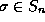 the collection 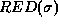 of the reduced words yielding . To be precise, for a given word 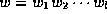, let us set
These polynomials are known as the ``Gessel quasi-symmetric functions''. Stanley was led to the bold step of setting for each with 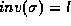 and N large enough
Stanley proves that 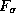 is symmetric and conjectures that it has a Schur function expansion of the form
with coeffcients 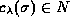 and 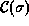 a suitable collection of partitions of the integer 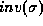. Stanley proves this conjecture for the so called ``vexillary '' permutations. These are the permutations that avoid the pattern ``2143''. He also shows that for these permutations, reduces to a single term, in fact 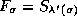, where for a permutation , the symbol 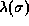 denotes the partition obtained by rearranging the inversion code of . In the years that followed there appeared several proofs of Stanley's conjecture . Two combinatorial proofs were given by Edelman-Greene (Advances in Math. Math. 63 (1987), 42-99) and Lascoux-Schützenberger (C. R. Acad. Sci. Paris 295 (1982) 629-633). These two proofs used essentially the same basic idea. In a course given at UCSD in winter 2001, Garsia noted that a new algorithm for the calculation of Littlewood-Richardson coefficients given by Lascoux-Schützenberger in (Letters in Math. Physics 10 (1985) 111-124) yielded what may certainly be viewed as the most fascinating approach to determining the coefficients in (1). Garsia's proof of the validity of this algorithm may be found in full detail in the manuscript The Saga of Reduced Factorizations of Elements of the Symmetric Group, which gives a complete account of the material covered in the course. Since Garsia's proof relies on the theory of Schubert polynomials it cannot be considered elementary. A paper giving a completely elementary, purely combinatorial proof of the validity of the algorithm will soon be available. This proof is based on the construction, for each permutation , of a Robinson-Schensted-like correspondence mapping each word 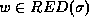 into the pair 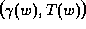 where 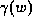 is a `` Grassmanian'' permutation (i.e. a permutation with only one descent) and T(w) is a standard tableau of shape 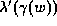. The following Applet carries out this correspondence. Experimenting with this Applet the user may notice that for the permutation 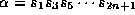 the map 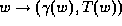 is essentially the Schensted correspondence where T(w) is the ``right tableau'', on the other hand for the permutation 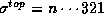 the map turns out to be essentially the Edelman-Greene correspondence. The Applet starts from a line diagram of a word and ends with the line diagram of a word 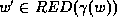. As a result one obtains a very beautiful combinatorial proof and interpretation for the coefficients 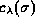 in (1). To be precise, the bijection proceeds along the branches of a tree associated to each permutation by Lascoux-Schützenberger. So a few words describing this tree should perhaps be included here. For this we need some notation. To begin let 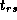 denote the transposition (r,s). Next for a permutation 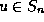 and an integer 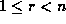 set
For a given permutation 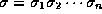 set 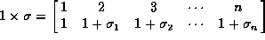. This given, the children of a permutation in the LS tree are obtained by the following ``Branching Algorithm''
It can be shown that if we go down a tree constructed by this branching process, starting from a root with first descent at 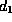 and last descent at 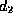 then in no more than 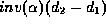 steps we must encounter a Grassmanian permutation. This given, the LS tree of a permutation is simply the tree constructed by this branching process with the requirement to stop the first time we hit a Grassmanian child. In this manner all the leaves will be Grassmanian. Denoting their collection ``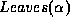'', it is shown in SAGA that we have the following remarkable fact
Since Grassanian permutations are vexillary, it follows from Stanley's theorem that for each of these leaves we have 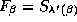. Thus (2) not only gives the Schur function expansion of 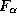 but it yields a beautiful combinatorial interpretation for the coefficients. Now (2) itself is but an immediate consequence of the following key identity
where 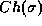 here denotes the collection of children of . In SAGA this identity is derived from Monk's rule for Schubert polynomials. Now to prove (3) (and therefore also (2)) combinatorially all we need to do is construct a descent preserving bijection between the following two sets of words
Moreover once this bijection is constructed, we can start with 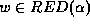 and, by iteration, go down the LS tree of until we reach the word of a leaf. In ultimate analysis we obtain in this manner a descent preserving bijection between the following two sets of words
|
||||||